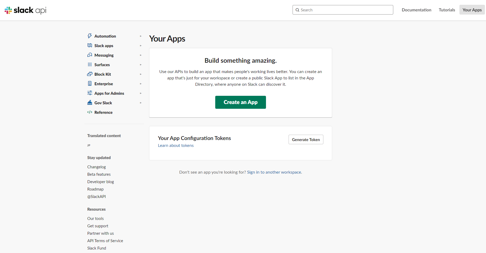
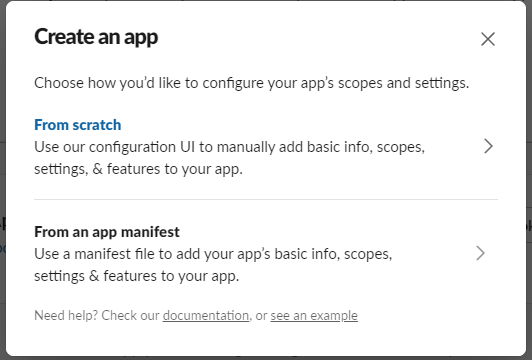
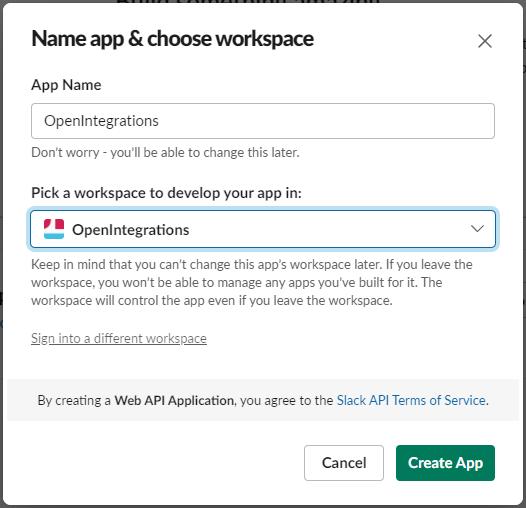
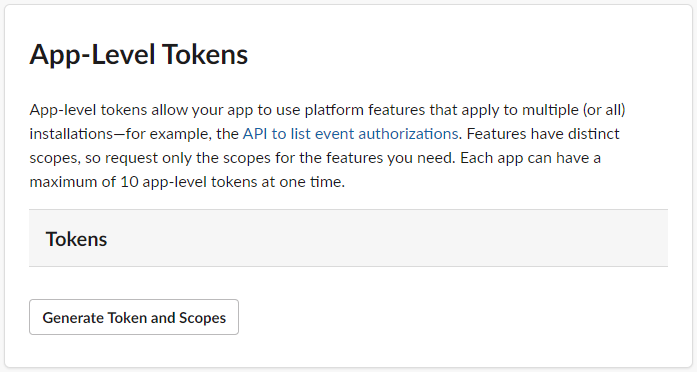
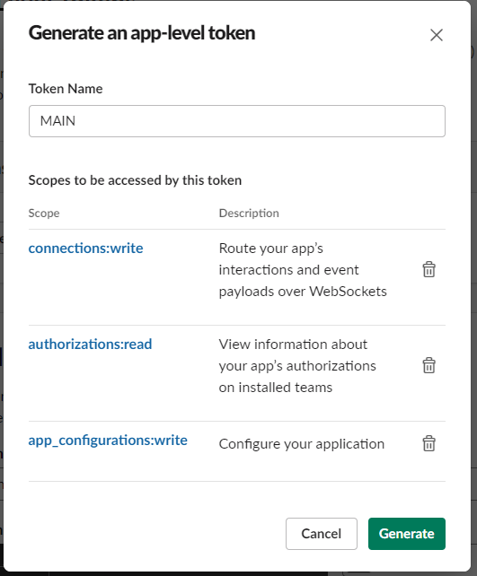
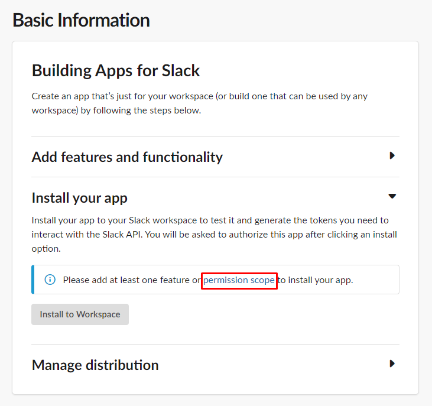
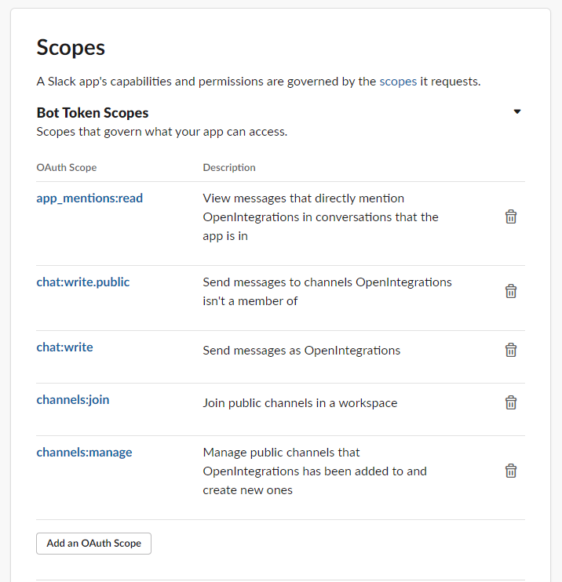
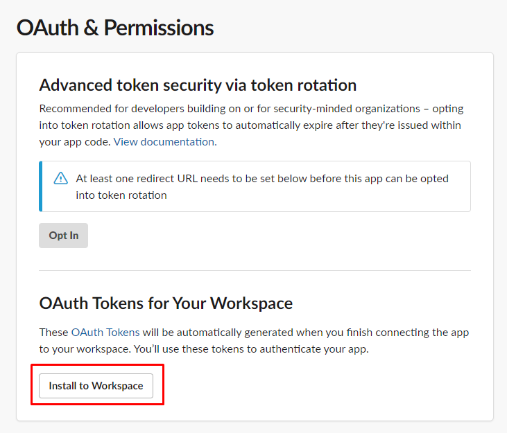
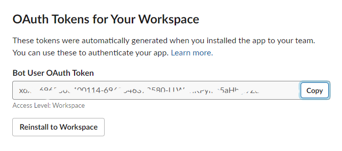

![]()
Slack
Этот раздел посвящен библиотеке для работы со Slack Web API в 1С:Предприятие, OneScript и CLI. На данной странице описаны все действия, необходимые для полноценного начала работы
Начало работы
- Войдите в свой аккаунт и перейдите на страницу Your Apps на сайте Slack API

- Нажмите Create App и выберите пункт From scratch

- Выберите название и рабочую область, в которой необходимо создать приложение

- Создайте новый токен, нажав Generate Token and Scopes ниже на странице приложения

- Выберите имя и добавьте разрешения

- Перейдите в раздел Premission scope из пункта установки приложения

- Добавьте необходимые для ваших целей разрешения

- Установите приложение

- Сохраните сгенерированный токен
